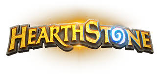

- 게임 모드
- 카드의 종류
- 하스스톤의 용어
게임 모드

하스스톤에는 네가지 플레이 모드가 있습니다. 1인 모험, 대전, 투기장,
선술집 난투입니다. 이외에 게임을 처음 플레이 하는 유저가 접할 수 있는
튜토리얼 모드도 존재합니다.
1. 대전
하스스톤의 가장 기본적인 모드입니다. 대전모드에는 두가지가 있다는 점을 인지해야
하는데, 이는 각각 일반 모드와 등급전 모드입니다. 직업을 선택 한 뒤 우측의
아이콘을 클릭하여 플레이 모드를 변경할 수 있습니다. 일반전은 아무 페널티가 없고,
등급전은 게임을 이기면 별을 얻어 등급을 올릴 수 있고, 지면 그 반대가 됩니다.
등급은 25~1과 전설 등급이 있고, 숫자가 낮을수록 높은 등급입니다.
2. 1인 모험
인공지능과 연습 모드를 하거나, 출시된 모험 모드를 즐길 수 있습니다. 플레이
가능한 모험 모드는 검은바위 산, 탐험가 연맹, 카라잔, 얼어붙은 왕좌의 기사들,
코볼트와 지하미궁이 있습니다.
3. 투기장
투기장은 입장할때 2000원이나 150골드를 지불하고 입장할 수 있습니다. 투기장은
자신의 카드가 아닌 임의의 3개의 카드를 30장 골라 상대와 싸우는 것이 특징
입니다. 직업도 9개중 3개가 나오기 때문에 상대와 진정한 운싸움을 하는 것입니다.
하지만 투기장은 어떤 카드가 좋은 카드인지를 잘 알고있어야 하기 때문에
초심자는 대전이나 연습 모드로 카드들을 익힌 다음 도전하는 것이 좋습니다.
3패를 하면 끝이 나고, 최대 12승까지 할 수 있으며, 3패를 하거나 12승을 하면
승리 횟수에 따른 보상을 얻게 됩니다.
4. 선술집 난투
선술집 난투는 매주 다릅니다. 자신이 직접 덱을 짜야할 때도 있고, 덱이
주어지기도 합니다. 다른 게임 모드와는 다른 규칙이 설정되어 있어
기본 대전에 질린 사람들이 하기에 좋습니다. 그러나 목~일 까지만 플레이
할 수 있습니다. 여기서도 퀘스트를 깰 수 있습니다.